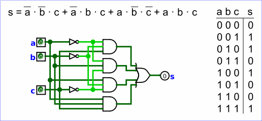

组合分析
所有电路都属于两个常见类别之一：在组合电路中，所有输出都只由当前输入的组合决定；而在时序电路中，某些输出还可能取决于过去的输入（也就是输入随时间变化的序列）。
组合电路是两者中较简单的一类。通常可以用三种主要表示方式来描述这类电路的行为。

- 逻辑电路
- 布尔表达式，允许以代数方式表示电路的工作原理
- 真值表，列出所有可能的输入组合及相应的输出
Logisim 的组合分析模块允许您在这三种表示形式之间双向转换。对于输入和输出数量较少、且每个输入输出都是一位的电路，这是一种创建和理解电路的便捷方法。
注意：组合分析在 Logisim-evolution 中默认被禁用。可以通过命令行选项重新启用。
打开组合分析
编辑真值表
创建表达式
生成电路
下一节： 打开组合分析。